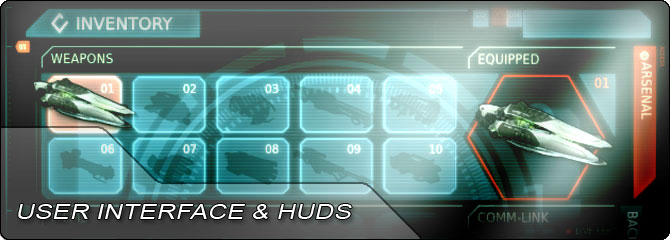

UDN
Search public documentation:
UIAndHUDHomeCH
English Translation
日本語訳
한국어
Interested in the Unreal Engine?
Visit the Unreal Technology site.
Looking for jobs and company info?
Check out the Epic games site.
Questions about support via UDN?
Contact the UDN Staff
日本語訳
한국어
Interested in the Unreal Engine?
Visit the Unreal Technology site.
Looking for jobs and company info?
Check out the Epic games site.
Questions about support via UDN?
Contact the UDN Staff
UE3 主页 >用户界面 & HUD
用户界面 & HUD

- 入门指南: 游戏性元素 - 关于在虚幻引擎3中添加新的游戏性元素的简介。
常见
- ScaleForm GFx - 关于UE3中的Scaleform GFx集成的概述。
- 设置Scaleform GFx - 在Adobe Flash Professional中设置针对UE3的Scaleform。
- Scaleform快速入门 - 为虚幻引擎3创建基本的Scaleform。
- Scaleform工作流程 - 为UE3创建Scaleform用户界面的工作流程。
- Scaleform属于 - Scaleform和Flash的常用术语和概念。
- Scaleform技术指南 - 关于在虚幻引擎3中使用Scaleform并通过代码控制Scaleform的指南。
- Scaleform内容指南 - 关于创建及设置在虚幻引擎3中使用的Scaleform用户界面的指南。
- Scaleform GFx导入通道 -关于导入Scalefom用户界面的Flash页面及内容到虚幻引擎3中的指南。
- Scaleform GFx内容最佳实践 - 关于使用Scaleform和UE3优化内容的技巧。
- HUD技术指南 - 关于在UE3中创建HUD(平视显示器)的指南。
- 画布技术指南 - 关于使用Canvas（画布)对象向屏幕上描画信息的指南。
- 移动设备菜单技术指南 - 关于使用移动设备菜单系统创建触摸界面的指南。
- UI数据存储系统 - 关于创建及使用UI数据仓库的指南。
- 创建及导入字体 - 如何导入可以在虚幻引擎 3 中使用的 true type 字体。